一．系统概述
1.1 设计说明
1.1.1 设计目的
· 跃迁是主要收入来源，版本内容能不能持续做下去，基本就看这块。
· 保底托住下限，概率制造惊喜。免费玩家靠时间也能攒出限定角色，付费玩家去追上限。
· 限定 UP 按版本轮换，玩家的节奏跟着走：攒资源、抽、养成、打高难内容。
· 月卡、大月卡、首充双倍这些，要能把小氪往上推成中氪。
· 抽卡副产物（未熄的星芒、未熄的余烬）能换票和材料，脸黑的人不至于完全没产出。
1.1.2 设计要求
· 概率要公示明白：基础概率和含保底的综合概率都写上，抽卡日志至少存 180 天，满足合规。
· 同类型卡池的保底计数和 UP 判定要跨版本继承，不能让玩家攒的抽数白费。
· UP 规则得让玩家一句话说清：角色池 50/50、光锥池 75/25，歪了下次必出。
· 星琼、星轨专票（限定）、星轨通票（常驻）三层分开，限定池和常驻池的票不通用，免得免费资源被常驻池吸走。
· 新手池打 8 折，50 抽内必出 5 星，先把人留住。
· 单抽十连都能一键跳过演出直接看结果，结果页支持分享。
1.1.3 系统流程整体逻辑
整体流程：进跃迁界面 → 选卡池 → 执行并结算 → 更新保底和 UP 状态 → 展示结果发奖励 → 去商店兑换或者查记录。
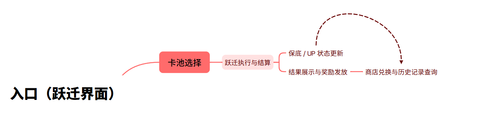
图 1-1 系统流程整体逻辑
1.2 系统简述
1.2.1 功能介绍
· 角色和光锥只能靠跃迁拿，版本限定的东西都从这里出。
· 交互就两种：单抽和十连。底层状态是保底计数加 UP 判定。
· 未熄的星芒、未熄的余烬这两种副产物进兑换商店，算是抽卡的回收口子。
· 概率公示和历史记录都开放给玩家查，省得玩家怀疑暗改概率。
1.2.2 卡池分类总览
| 卡池类型 | 卡池名称 | 消耗道具 | 5 星硬保底 | UP 机制 | 计数继承 |
|---|---|---|---|---|---|
| 新手 | 星海巡航 | 星轨通票（8 折） | 50 抽 | 无 UP，50 抽内必出 5 星 | 不继承 |
| 角色活动 | 角色活动跃迁 | 星轨专票 | 90 抽 | 50% UP，歪后必出 | 跨版本继承 |
| 光锥活动 | 光锥活动跃迁 | 星轨专票 | 80 抽 | 75% UP，歪后必出 | 跨版本继承 |
| 常驻 | 群星璀璨 | 星轨通票 | 90 抽 | 七位常驻角色定向抽取 | 永久累计 |
1.2.3 核心循环
日常活跃产星琼 → 星琼换专票 → 跃迁消耗 → 出角色、光锥和副产物 → 未熄的星芒再换专票 → 养成 → 打高难内容 → 继续产星琼。
二．系统说明
2.1 系统解锁与入口
· 开拓等级到 5 级、主线做完「于曈昽的骄阳下」，跃迁就开了。
· 入口在游玩画面右上方，叫「抽卡界面」，点了直接进跃迁主界面。
· PC 上还能按 F4 直接开，ESC 退回游玩画面。
· 移动端一样，点右上那个圆形入口。
· 活动期间游玩画面会挂当期 UP 的快捷入口，点了直接跳对应卡池。
2.2 卡池说明
2.2.1 新手跃迁 · 星海巡航
· 这是个独立池，最多抽 50 次，抽满或者出了 5 星就关。
· 十连打 8 折，也就是 10 连只花 8 张通票。
· 前 10 连必出 4 星及以上；50 抽内必出 5 星。
· 保底计数独立，不跟别的池继承。抽满 50 次入口就没了。
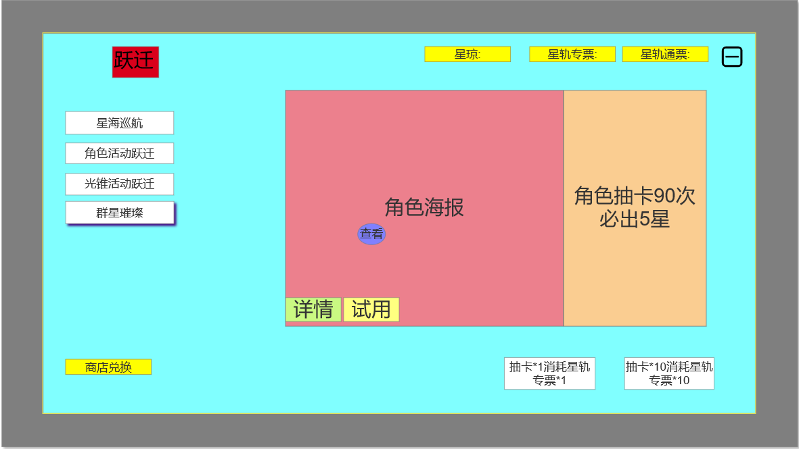
图 2-1 星海巡航（新手跃迁）界面
2.2.2 角色活动跃迁
· 一个版本分上下半，各开 1 个（或者带复刻）限定 5 星角色。
· 同期 UP 3 个 4 星角色，占 4 星的一半权重。
· 花星轨专票，5 星 90 抽保底，4 星 10 抽保底。
· 界面长什么样见 4.2 和图 4-1。
2.2.3 光锥活动跃迁
· 跟角色池同期开，UP 当期的限定 5 星光锥。
· 也是花专票，5 星 80 抽保底，UP 命中率 75%，比角色池好出不少。
· 跟角色池共用左边那排页签。切到「光锥活动跃迁」，中间海报换成光锥，右边提示文案也跟着变成「光锥抽卡 80 次必出 5 星」。
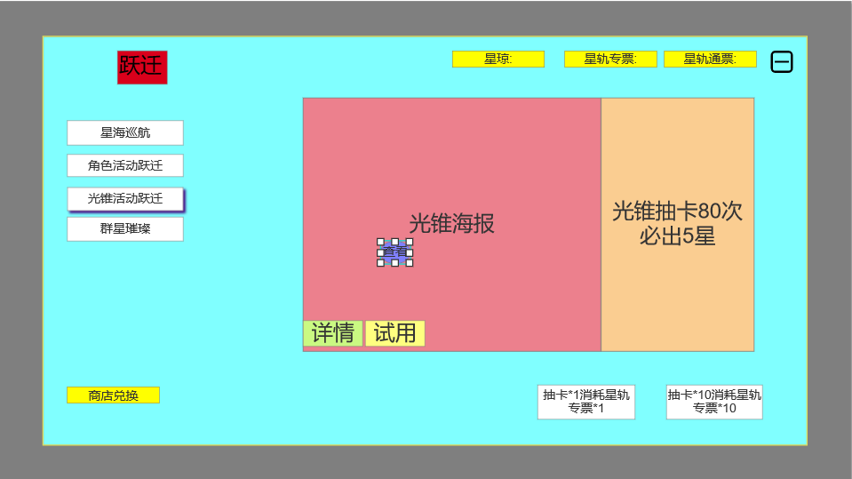
图 2-2 光锥活动跃迁界面
2.2.4 常驻跃迁 · 群星璀璨
· 常驻的角色和光锥都在这儿，花通票，5 星 90 抽保底。
· 右边提示区有个「选择七位角色作为定向抽取」的入口，玩家从常驻 5 星里挑 7 个当定向目标。
· 累计抽满 300 次能解锁一次自选常驻 5 星，每个号只能领 1 次，领完计数清零重新攒。
图 2-3 常驻跃迁「群星璀璨」界面
2.3 概率与保底说明
· 角色池：5 星基础 0.6%，4 星 5.1%，3 星 94.3%。算上保底，5 星综合 1.6%、4 星 13.0%。
· 光锥池：5 星基础 0.8%，4 星 6.6%，3 星 92.6%。算上保底，5 星综合 2.0%。
· 软保底：5 星在到硬保底之前会先进概率递增区间，角色池从第 74 抽起、光锥池从第 61 抽起。递增步长见 3.1、3.2 和配置表。
· 硬保底：角色池 90 抽、光锥池 80 抽必出 5 星。4 星是每 10 抽必出一个 4 星及以上。
· 十连里至少含 1 个 4 星及以上。
2.4 货币与消耗说明
跃迁一共涉及五种货币和道具：星琼是通用货币，星轨专票和星轨通票是跃迁券、互相不通，未熄的星芒和未熄的余烬是抽卡副产物。
| 货币 / 道具 | 获取途径 | 用途 | 备注 |
|---|---|---|---|
| 星琼 | 充值、日常 / 周常、活动、探索、成就、补偿 | 兑换跃迁券、兑换其他资源 | 通用高级货币，可与古老梦华互相兑换 |
| 星轨专票 | 星琼 1:160 兑换、星芒商店（20 星芒 / 张，不限购）、活动赠送 | 限定卡池（角色 / 光锥活动跃迁） | 限定池专用，不可用于常驻池 |
| 星轨通票 | 星琼 1:160 兑换、星芒商店、余烬商店（90 余烬 / 张，月限 5）、大月卡、开拓等级奖励 | 常驻池、新手池 | 常驻池专用，不可用于限定池 |
| 未熄的星芒 | 4 / 5 星光锥每张转化；重复获得 4 / 5 星角色转化 | 星芒商店兑换专票、通票、常驻 5 星光锥与轮换 4 星角色 | 核心回收货币，兑换跃迁券不限购 |
| 未熄的余烬 | 3 星光锥每张转化（20 枚 / 张） | 余烬商店兑换跃迁券与基础养成资源 | 高频低值货币，兑换跃迁券每月各限 5 张 |
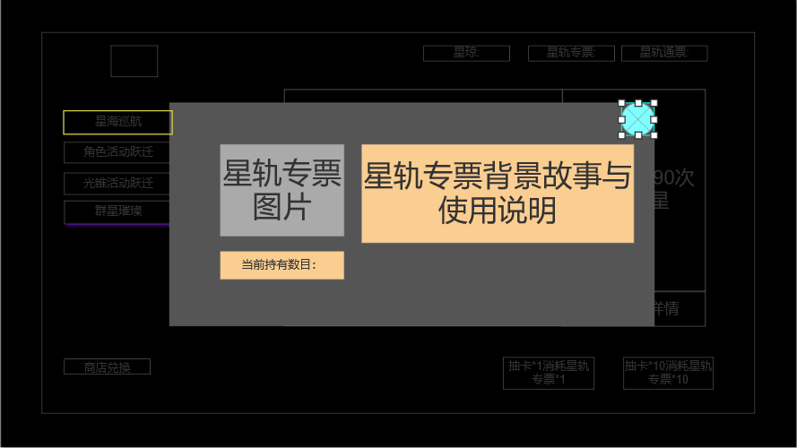
图 2-4 星轨专票道具详情弹窗
· 点右上角「星轨专票」那个栏位，会弹道具详情：道具图、背景故事、使用说明，还有当前持有多少。
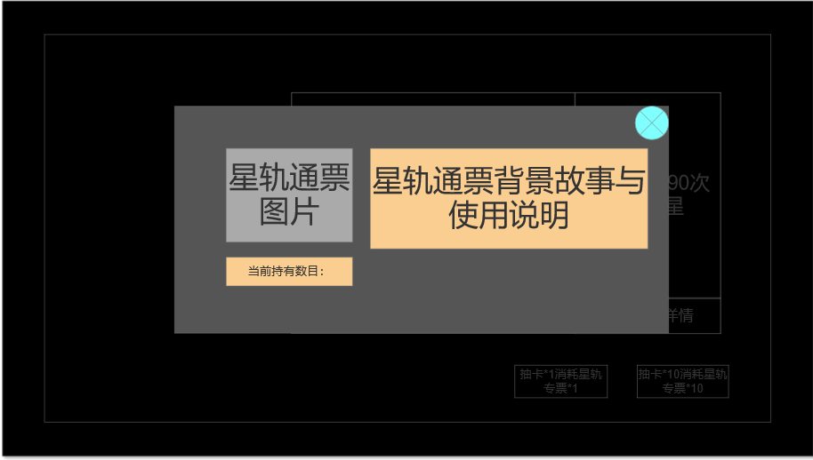
图 2-5 星轨通票道具详情弹窗
· 通票的弹窗结构一样，两张票分别对限定池和常驻池。
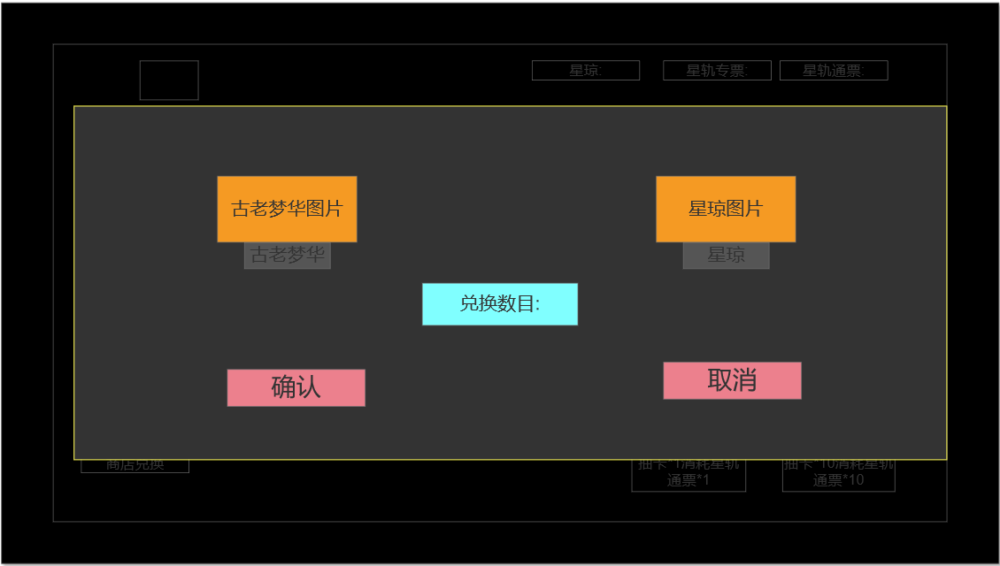
图 2-6 星琼兑换弹窗
· 星琼和古老梦华能互兑。弹窗里是两边的图标、兑换数目输入框，加确认和取消。确认后立刻到账。
2.5 抽卡副产物与兜底兑换
· 3 星光锥每张给未熄的余烬 ×20；4 / 5 星光锥每张分别给未熄的星芒 ×8 / ×40；重复获得 4 / 5 星角色时，第 2 ~ 7 次给星芒 ×8 / ×40 并附星魂 ×1，第 8 次及之后给星芒 ×20 / ×100（5 星另附旅伴银灵 ×1）。转化系数见 5.4。
· 星芒商店 20 枚星芒换 1 张星轨专票或星轨通票，不限购，另有常驻 5 星光锥与轮换 4 星角色；余烬商店 90 枚余烬换 1 张票，专票 / 通票每月各限 5 张。兑换配置见 5.5。
· 余烬商店每月 1 日 04:00 刷新，换信用点、角色经验材料、行迹材料，算是抽卡到养成的软补偿（与星芒兑换同属 4.6 的商店界面，页签结构见图 4-7）。
· 这块的意义是给长期不出货的人一个兜底：运气不行就多花时间换，别让人直接弃坑。
2.6 计数继承与重置规则
· 保底计数按卡池类型分开记：角色池、光锥池、常驻池各算各的。
· 同类型的池之间完全继承，上一期角色池没出的保底接着带到本期。卡池结束不清零。
· 上次歪没歪这个结果也按保底分组记着，跨版本继承。
· 拿到 UP 之后计数清零，UP 判定回到 50/50（角色池）或 75/25（光锥池）。
· 新手池单独算，不参与继承。
· 常驻池那个 300 抽的定向计数是按账号永久累计的，领完重置。
2.7 状态记录
下面这些操作都要更新并记录跃迁状态：
· 消耗跃迁道具执行单抽 / 十连；
· 产出任意稀有度物品；
· 保底计数变化、UP 判定结果变化；
· 星芒 / 余烬余额变化、商店兑换；
· 卡池开启 / 结束、跨版本继承。
三．数值模型
3.1 角色活动跃迁 5 星概率模型
设第 n 次跃迁产出 5 星的概率为 P(n)，模型如下：
P(n) = 0.006 1 ≤ n ≤ 73
P(n) = min(0.006 + (n-73) × 0.06, 1) 74 ≤ n ≤ 90
· 0.6% 是基础概率，前 73 抽不变；从第 74 抽开始每抽加 6 个百分点，到第 90 抽锁死 100%。
· 期望出货 62.3 抽，换算成含保底的综合概率是 1.60%，跟对外公示的数字一致。
· 中位数 66 抽，也就是一半的人在 66 抽内出。
3.2 光锥活动跃迁 5 星概率模型
P(n) = 0.008 1 ≤ n ≤ 60
P(n) = min(0.008 + (n-60) × 0.05, 1) 61 ≤ n ≤ 80
· 0.8% 是基础概率，前 60 抽不变；从第 61 抽开始每抽加 5 个百分点，到第 80 抽锁死 100%。
· 期望出货 50.4 抽，含保底综合概率 1.98%，对外公示写的是 2.0%。
3.3 4 星概率与保底模型
· 角色池 4 星基础 5.1%，光锥池 4 星基础 6.6%。
· 4 星没有软保底，就是 10 抽硬保底。
· 期望出货 8.0 抽，含保底综合概率 12.5% 左右，对外公示写 13.0%，以公示为准。
· 4 星也有 UP 判定，角色池 50%、光锥池 75%，歪了下次必出，计数规则跟 5 星一样。
3.4 出货概率分布（角色池 5 星）
| 抽数 | 10 | 30 | 50 | 62（期望） | 70 | 73 | 75 | 78 | 80 | 82 | 85 | 90 |
|---|---|---|---|---|---|---|---|---|---|---|---|---|
| 累计出货率 | 5.9% | 16.5% | 26.0% | 31.1% | 34.4% | 35.6% | 47.4% | 77.6% | 91.8% | 98.1% | 99.9% | 100% |
3.5 UP 判定与期望成本
| 目标 | 判定规则 | 单次 5 星期望 | 目标期望抽数 | 折合星琼 | 折合人民币（无首充） |
|---|---|---|---|---|---|
| 限定 5 星角色（0 魂） | 50 / 50，歪后必出 | 62.3 抽 | 93.5 抽 | 14,960 | 约 ¥1,496 |
| 限定 5 星光锥（1 阶） | 75 / 25，歪后必出 | 50.4 抽 | 63.0 抽 | 10,080 | 约 ¥1,008 |
| 角色 0 魂 + 光锥 1 阶 | 两者叠加 | — | 156.5 抽 | 25,040 | 约 ¥2,504 |
| 限定 5 星角色满魂（6 魂） | 需 7 个拷贝 | 62.3 抽 | 654 抽 | 104,640 | 约 ¥10,464 |
3.6 免费资源投放与长线节奏
| 版本周期 | 日常 + 周常 | 版本活动 | 探索 / 成就 / 主线 | 维护补偿 + 兑换码 | 合计星琼 | 折合抽数 |
|---|---|---|---|---|---|---|
| 42 天 / 版本 | 约 2,520 | 约 3,600 | 约 2,000 | 约 1,000 | 约 9,120 | 约 57 抽 |
| 保守（低活跃） | 约 2,520 | 约 2,400 | 约 1,200 | 约 1,000 | 约 7,120 | 约 44 抽 |
| 月卡玩家 + 免费 | — | — | — | — | 约 12,100 | 约 75 抽 |
·免费玩家：约1.6~1.9 个版本可稳定拿下一个大保底（93.5 抽），即平均每 2 个版本必得 1个限定 5 星；
·月卡玩家：约 1.25 个版本一个大保底，节奏显著改善，这是月卡（¥30）性价比的核心支撑；
·设计结论：免费玩家的"确定性获取周期"必须控制在 2 个版本以内，超过则会显著抬升流失率。
3.7 经济自洽性校验
| 校验维度 | 风险点 | 处理方式 |
|---|---|---|
| 通胀 | 星琼单向投放、无回收 | 跃迁为主 sink；星琼兑换为次级 sink；星琼不可交易，无二级市场 |
| 无限自循环 | 星芒兑换跃迁券形成"抽卡 → 抽卡"闭环 | 星芒仅由 4 / 5 星光锥与重复角色产出，单抽期望 0.5 ~ 4.2 枚（≈0.03 ~ 0.21 张券），闭环放大系数 1.03 ~ 1.27；余烬兑券每月各限 5 张，闭环增益封顶 10 抽 / 月。二者均远低于自持临界点，可控 |
| 属性膨胀 | 限定角色强度持续走高导致旧角色贬值 | 角色强度走"机制差异化"而非纯数值堆叠；环境 buff 每版本轮换 |
| 负反馈缺失 | 长期不出货玩家无补偿 | 星芒 / 余烬兜底兑换 + 硬保底 + UP 判定继承三重保障 |
| 极端非酋 | 连续多次歪 | 歪后必出（大保底）机制将最坏情况锁定为 2 倍期望，方差可控 |
| 囤积风险 | 玩家囤积数个版本资源后一次性爆发 | 限定池周期固定、UP 不重复，囤积仅改变节奏不改变总消耗 |
四．界面说明
4.1 跃迁入口
跃迁入口挂在主界面右上角，常态是一个带图标的方形按钮；有活动的时候旁边会多挂一块 UP 立绘和倒计时。下面这张表按区域把入口上会出现的元素逐个拆开说。
表 4-1 跃迁入口元素说明表
| 位置 | 元素名称 | 交互表现 / 显示规则 |
|---|---|---|
| 入口区 · 主界面右上角 | 跃迁入口按钮 | 点击打开跃迁主界面（见 4.2），默认停在当期主推卡池；跃迁功能未开放时整个入口不显示 |
| 挂件区 · 入口左侧 | 当期 UP 立绘 | 点击跳过默认首页直接跳到该活动卡池；仅在角色 / 光锥活动跃迁进行中挂载，活动结束即撤下 |
| 挂件区 · 立绘下方 | 卡池倒计时 | 静态展示，不响应点击；剩余不足 24 小时时文字转橙；随立绘一起出现和消失 |
| 角标层 · 入口右上角 | 红点提示 | 不单独响应点击；有待领的跃迁相关道具（活动送的票、邮件补偿）或当期有没进过的卡池时出现，点开入口后清除 |
| 过渡层 · 点击之后 | 加载态 | 期间屏蔽重复点击，连点不会开两次窗；卡池配置拉取完成前不打开界面，避免展示过期数据 |
分区小结：
· 入口区：跃迁入口按钮、点击后的加载态；
· 挂件区：当期 UP 立绘、卡池倒计时；
· 角标层：红点提示。
4.2 跃迁主界面
跃迁主界面是整套系统的中枢，一共切成五个区：顶部信息条、左侧页签栏、中部主视觉区、右侧保底提示区和底部操作区——左边选卡池，中间看当期主视觉，右边看保底，右下角下指令。每个区的元素见 4.2.1。
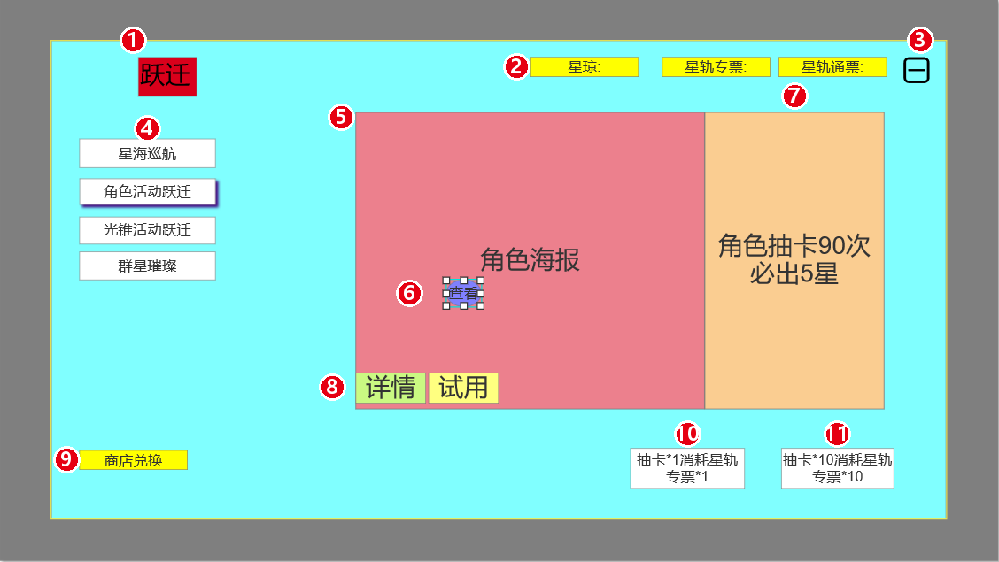
图 4-1 角色活动跃迁主界面（红圈编号 ① ~ ⑪ 含义见表 4-2）
4.2.1 界面元素说明
下面这张表把主界面每个区域的位置、叫什么、干什么逐个说清楚，编号跟图 4-1 上的红圈对得上；这一版把每个元素的交互表现和显示规则都并到最后一列，方便照着直接落地。
表 4-2 跃迁主界面元素说明表
| 编号 | 位置 | 元素名称 | 内容与说明 | 交互表现 / 显示规则 |
|---|---|---|---|---|
| ① | 左上角 | 界面标题 | 红底白字「跃迁」，标明当前所在系统 | 静态展示，不可点击 |
| ② | 右上角 | 货币与跃迁券余额栏 | 三个并排栏位，依次显示「星琼」「星轨专票」「星轨通票」的持有量 | 点击任一栏位弹出道具详情弹窗（图 2-4 / 图 2-5） |
| ③ | 右上角最右 | 关闭按钮 | 圆角方形按钮 | 关闭跃迁界面并返回来源界面；PC 端 ESC 同效 |
| ④ | 左侧 | 卡池页签列表 | 竖向排列四个页签：星海巡航 / 角色活动跃迁 / 光锥活动跃迁 / 群星璀璨，当前项高亮 | 点击切换卡池，主视觉、保底提示与消耗道具同步刷新（完整链路见 4.2.2） |
| ⑤ | 中部主区域 | 卡池主视觉（海报位） | 展示当期 UP 角色或光锥海报，新手池与常驻池展示对应主题图 | 静态展示 |
| ⑥ | 海报中部 | 查看按钮 | 海报上的「查看」按钮 | 点击查看当期 UP 角色 / 光锥详情 |
| ⑦ | 右侧 | 保底规则提示区 | 橙色区域，显示当前卡池的保底规则，如「角色抽卡 90 次必出 5 星」 | 静态展示，随卡池切换同步更新文案 |
| ⑧ | 海报左下 | 详情 / 试用按钮 | 「详情」打开概率公示弹窗；「试用」进入角色试用 | 详见 4.3；试用为限次体验，不消耗跃迁券 |
| ⑨ | 左下角 | 商店兑换入口 | 黄底按钮「商店兑换」 | 跳转商店与兑换界面（详见 4.6） |
| ⑩ | 右下角左侧 | 单抽按钮 | 「抽卡*1 消耗星轨专票*1」 | 消耗 1 张对应跃迁券执行单次跃迁；票不足时按钮上的数量标红，点击改走 4.7 的补足流程 |
| ⑪ | 右下角右侧 | 十连按钮 | 「抽卡*10 消耗星轨专票*10」 | 消耗 10 张对应跃迁券执行十连跃迁；票数不足 10 张时同样标红，点击走同一套补足流程 |
界面布局分区小结：
· 顶部一排：① 标题、② 余额栏、③ 关闭；
· 左边：④ 卡池页签；
· 中间：⑤ 海报、⑥ 查看、⑧ 详情和试用；
· 右边：⑦ 保底提示；
· 底部：⑨ 商店兑换、⑩ 单抽、⑪ 十连。
4.2.2 卡池切换
卡池页签都在左侧栏，选哪套卡池由它决定；页签一变，中部海报、右侧保底提示、底部消耗道具和概率公示要一起跟着换。下面这张表把切换这件事涉及的元素拆开说。
表 4-3 卡池切换元素说明表
| 位置 | 元素名称 | 交互表现 / 显示规则 |
|---|---|---|
| 左侧栏 | 卡池页签列表 | 点击切换卡池；已经选中的页签再点不刷新；按固定顺序排，某一套卡池当期没开就整体隐藏该页签 |
| 左侧栏 · 页签单元 | 选中态描边 | 随点击落到新页签，切换动画 0.3 秒；同一时刻只有一个选中态，动画期间连点不打断重放 |
| 左侧栏 · 页签右上角 | 倒计时角标 | 静态展示；卡池结束前 24 小时挂上去，卡池结束后该页签下架，选中位自动回落到群星璀璨 |
| 联动区 · 中部 + 右侧 + 底部 | 主视觉与数据联动 | 无直接交互，跟着页签走；数据全部取切换后卡池的配置（角色池见图 4-1，光锥池见图 2-2，常驻见图 2-3，新手见图 2-1） |
| 左侧栏 · 默认落点 | 默认停留卡池 | 无交互；默认停在当期主推的活动卡池，不记忆玩家上次停留的位置；当期没有活动卡池时停在群星璀璨 |
分区小结：
· 左侧页签栏：卡池页签列表、选中态描边、倒计时角标；
· 联动区：海报、保底提示、票种与概率公示一起换；
· 默认落点：每次进来都重新定位，不继承上次停留。
4.3 概率公示与详情页面
「详情」弹窗负责把当期卡池的概率摆到明面上，外面压暗、只能关不能做别的。弹窗从上到下切成遮罩层、标题栏、概率区、UP 展示区和页签区五个区域，逐个元素的说明如下。
表 4-4 概率公示与详情页面元素说明表
| 编号 | 位置 | 元素名称 | 内容与说明 | 交互表现 / 显示规则 |
|---|---|---|---|---|
| ① | 遮罩层 · 全屏 | 背景遮罩 | 黑色半透明层，压暗底下的跃迁主界面 | 点击遮罩关闭弹窗；弹窗打开期间主界面不可操作 |
| ③ | 标题栏 · 右端 | 关闭按钮 | 圆角方形关闭键 | 点击关闭弹窗，PC 端 ESC 同效；关闭后回到来源卡池 |
| ④ | 概率区 · 上部 | 概率提升范围条 | 横条加刻度，标出基础概率段和软保底递增段的起点 | 静态展示；条长与刻度按卡池配置生成，不同卡池不同（见 3.1、3.2） |
| ⑦ | UP 展示区 · 分区列表 | 当期 UP 对象图标 | 分区列出当期概率提升的 5 星与 4 星对象 | 点击图标弹出该角色或光锥的立绘与简介；角色池显示角色，光锥池显示光锥，常驻池没有 UP 时改为列出全部可出对象 |
| ⑧ | 页签区 · 顶部 | 查看详情 / 历史记录 | 两个页签，前者讲概率规则，后者是跃迁记录 | 点击切换；默认停在「查看详情」，「历史记录」的内容见 4.5 |
分区小结：
· 遮罩层：① 背景遮罩；
· 标题栏：② 弹窗标题、③ 关闭按钮；
· 概率区：④ 概率提升范围条、⑤ 概率明细表、⑥ 合规脚注；
· UP 展示区：⑦ 当期 UP 对象图标；
· 页签区：⑧ 查看详情与历史记录。
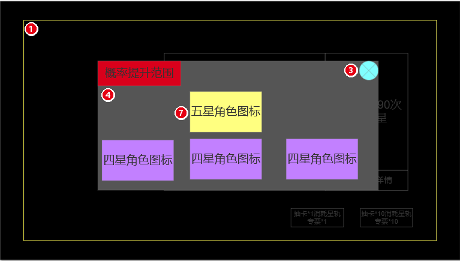
图 4-2 抽卡概率详情弹窗（红圈编号 ① ③ ④ ⑦ 含义见表 4-4）
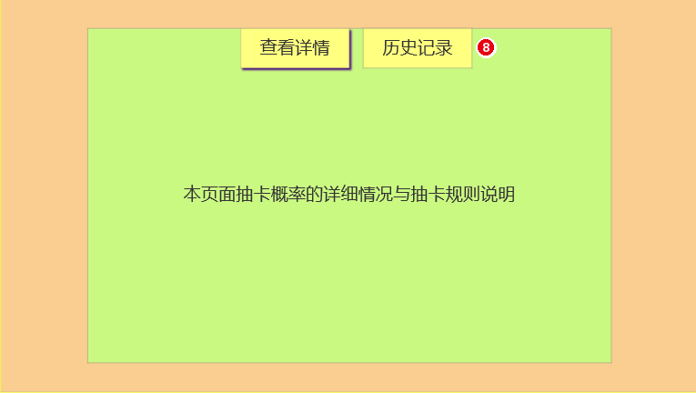
图 4-3 详情页面 · 查看详情（红圈编号 ⑧ 含义见表 4-4）
4.4 跃迁演出与结果展示
跃迁结果分成三段走：演出、结果面板、操作区。演出可以一键跳过直接看结算，结果面板负责把这次出什么、重复转化了多少代币摆清楚，操作区给「再来一次」和「分享」两个出口。逐个元素的说明如下。
表 4-5 跃迁演出与结果展示元素说明表
| 编号 | 位置 | 元素名称 | 内容与说明 | 交互表现 / 显示规则 |
|---|---|---|---|---|
| ② | 结果面板 · 中央 | 结果卡 / 结果网格 | 单抽 1 张卡，十连排成一排 10 张 | 点击单卡翻面看详情，点面板空白推进到下一段；十连按稀有度从高到低排列（5 星 → 4 星 → 3 星），5 星卡加大加粗 |
| ④ | 结果面板 · 卡片下方 | 重复转化标注 | 出货对象对应的代币转化说明 | 当场结算；重复角色在给代币的同时按规则给星魂，光锥不论是否重复都会转出代币，转化系数见 5.4 |
| ⑦ | 操作区 · 右下角 | 分享按钮 | 「点击分享结果」字样按钮 | 点击唤起系统分享面板；分享图由客户端本地生成，不带任何账号标识信息 |
分区小结：
· 演出层：① 跃迁动画；
· 结果面板：② 结果卡与结果网格、③ 稀有度描边、④ 重复转化标注、⑤ 本次结算汇总；
· 操作区：⑥ 再次跃迁、⑦ 分享结果、⑧ 返回。
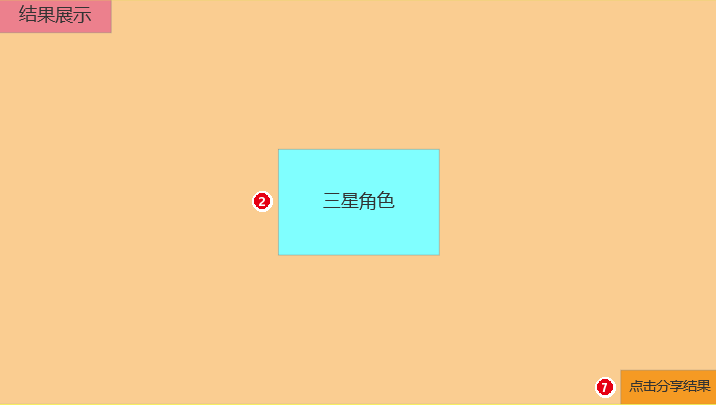
图 4-4 单抽结果展示（红圈编号 ② ⑦ 含义见表 4-5）
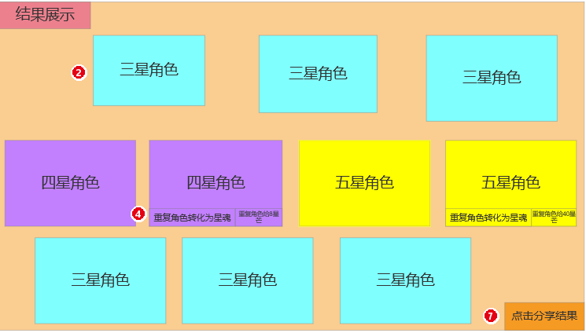
图 4-5 十连结果展示（红圈编号 ② ④ ⑦ 含义见表 4-5）
4.5 跃迁记录
跃迁记录是纯只读页面，从详情弹窗的「历史记录」页签进来，从上到下切成说明与筛选区、列表区和归档边界三部分。逐个元素的说明如下。
表 4-6 跃迁记录元素说明表
| 编号 | 位置 | 元素名称 | 内容与说明 | 交互表现 / 显示规则 |
|---|---|---|---|---|
| ① | 说明区 · 顶部 | 查询范围说明 | 小字写明当前能查到多久以前的数据 | 静态展示；文案随服务端留存时长走，过期数据归类到「已归档」 |
| ⑤ | 列表区 · 表头 | 记录表头 | 四列：对象类型、对象名称、跃迁类型、跃迁时间 | 静态展示；列顺序固定，不支持自定义排序 |
| ⑥ | 列表区 · 主体 | 记录行 | 一条出货一行记录 | 只读，点击无响应；按时间倒序，最新的在最上；一次十连的 10 条连续排列并共享同一时间戳 |
分区小结：
· 说明区：① 查询范围说明；
· 筛选区：② 跃迁类型、③ 时间范围、④ 统计条；
· 列表区：⑤ 表头、⑥ 记录行、⑦ 分页加载、⑧ 空结果占位；
· 归档边界：客户端只查得到近 6 个月，服务端仍留存 180 天用于合规核查。
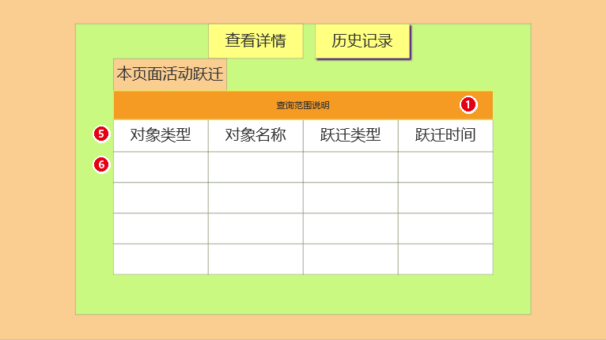
图 4-6 详情页面 · 历史记录（红圈编号 ① ⑤ ⑥ 含义见表 4-6）
4.6 商店与兑换界面
商店与兑换界面从主界面左下的「商店兑换」进来，也可以在背包里点货币的「使用」跳过来。整屏切成左侧分类栏、右上角余额、中部商品网格和兑换确认四部分，逐个元素的说明如下。
表 4-7 商店与兑换界面元素说明表
| 编号 | 位置 | 元素名称 | 内容与说明 | 交互表现 / 显示规则 |
|---|---|---|---|---|
| ① | 左侧栏 | 分类页签列 | 竖排六个分类：推荐、星芒兑换、余烬兑换、协议商店、捕获梦华、星琼购买 | 点击切换分类；顺序固定，默认停在「推荐」；图 4-7 停在「星芒兑换」 |
| ② | 右上角 | 货币余额栏 | 当前分类对应代币的持有数量 | 点击弹出该代币的道具详情；货币图标与数值随分类切换一起换 |
| ③ | 中部主区 | 商品网格 | 一格一个商品，按配置顺序排列 | 上下滚动浏览；每行列数固定，不同分类之间独立滚动位置 |
| ④ | 商品格 · 主体 | 商品卡 | 图标、名称、单价，单价前带对应货币的小图标 | 点击弹出购买确认；价格取自 5.5 的兑换配置表，不由界面写死 |
分区小结：
· 左侧分类栏：① 分类页签列；
· 顶部信息条：② 货币余额栏；
· 中部商品网格：③ 商品网格、④ 商品卡、⑤ 限购进度、⑥ 售罄态；
· 确认层：⑦ 兑换确认窗；
· 刷新规则：⑧ 每月 1 日 4:00 统一重置限购。
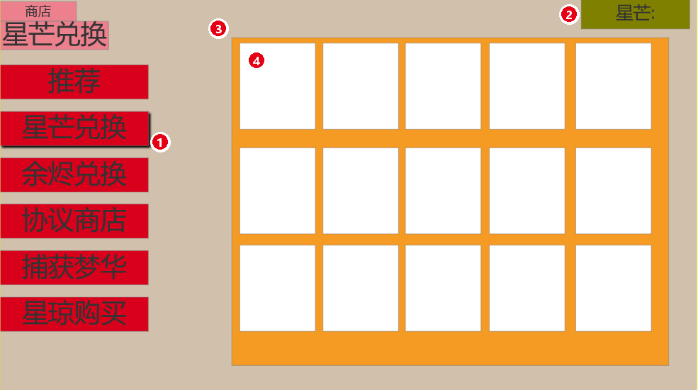
图 4-7 星芒兑换商店（红圈编号 ① ~ ④ 含义见表 4-7）
4.7 资源不足与充值引导
跃迁券不够的时候点「跃迁」，主界面不动，上面压一个补足弹窗：先把差多少摆明白，再给一条「用星琼补」和一条「去充值」的路，星琼也不够时就只剩充值。弹窗切成遮罩层、文案区、按钮区和规则脚注四部分，逐个元素的说明如下。
表 4-8 资源不足与充值引导弹窗元素说明表
| 位置 | 元素名称 | 交互表现 / 显示规则 |
|---|---|---|
| 遮罩层 · 全屏 | 背景遮罩 | 点击遮罩等于取消本次跃迁，不扣任何道具，也不改变已有票数 |
| 文案区 · 中部 | 缺口文案「跃迁券不足，还差 XX 枚，可用 XXX 星琼补足」 | 静态展示；XX 为缺几张票，XXX 按 160 星琼兑一张算出，随持有票数实时刷新 |
| 按钮区 · 主按钮 | 主按钮「使用星琼补足 XXX」 | 点击先扣星琼、按 160 比 1 自动换成票，再执行本次跃迁；星琼不足以覆盖缺口时该按钮不亮 |
| 按钮区 · 次按钮 | 前往充值 | 点击跳转星琼购买（见图 2-6）；跳转不中断当前卡池，返回后仍停在原卡池原黄页位置 |
| 按钮区 · 右端 | 关闭按钮 | 点击等于取消本次跃迁；与点遮罩、PC 端 ESC 效果一致 |
| 按钮区 · 单按钮态 | 充值单按钮态「前往充值」 | 此时文案改为「星琼不足」；该态下不能通过星琼完成补足，只能充值或关闭 |
| 文案区 · 推荐位 | 推荐充值档位提示 | 静态展示；例如差 320 星琼就推荐 980 那一档，不推荐更高档，避免过度推销 |
| 规则脚注 · 底部 | 补足顺序说明 | 静态展示；先把手里已有的票用掉，缺的几张才按 160 星琼一张补，差几张换几张，不多换 |
分区小结：
· 遮罩层：背景遮罩；
· 文案区：缺口文案、推荐充值档位；
· 按钮区：使用星琼补足、前往充值、关闭、单按钮态；
· 规则脚注：补足顺序说明。
五．配置表
5.1 卡池基础配置表
表 5-1 跃迁卡池基础配置表
| var | GachaID | GachaName | GachaType | CostItemID | CostNum | PityGroupID | StartTime | EndTime |
|---|---|---|---|---|---|---|---|---|
| 程序调用 | c,s | c,s | c,s | c,s | c,s | c,s | c,s | c,s |
| type | string | string | int | string | int | string | string | string |
| 备注 | 卡池ID | 卡池名称 | 卡池类型 1新手/2角色活动/3光锥活动/4常驻 | 消耗道具ID | 单次消耗数量 | 保底计数分组ID | 开启时间 | 结束时间 |
| GP001 | 星海巡航 | 1 | Ticket_002 | 1 | PITY_NOVICE | 常驻 | 抽满 50 次关闭 | |
| GP002 | 角色活动跃迁 | 2 | Ticket_001 | 1 | PITY_CHAR | 版本上半 06:00 | 版本下半结束前 15:00 | |
| GP003 | 光锥活动跃迁 | 3 | Ticket_001 | 1 | PITY_LC | 版本上半 06:00 | 版本下半结束前 15:00 | |
| GP004 | 群星璀璨 | 4 | Ticket_002 | 1 | PITY_STD | 永久 | 永久 |
5.2 概率与保底配置表
表 5-2 跃迁概率与保底配置表
| var | PityGroupID | Rarity | BaseRate | SoftPityStart | SoftPityStep | HardPity | UpRate | PityCarry | GuaranteeNext |
|---|---|---|---|---|---|---|---|---|---|
| 程序调用 | c,s | c,s | c,s | c,s | c,s | c,s | c,s | c,s | c,s |
| type | string | int | float | int | float | int | float | int | int |
| 备注 | 保底分组 | 稀有度 | 基础概率 | 软保底起始抽数 0为无 | 软保底每抽绝对递增 | 硬保底抽数 | UP命中率 | 是否跨池继承 | 歪后是否必出UP |
| PITY_CHAR | 5 | 0.006 | 74 | 0.06 | 90 | 0.50 | 1 | 1 | |
| PITY_CHAR | 4 | 0.051 | 0 | 0 | 10 | 0.50 | 1 | 1 | |
| PITY_CHAR | 3 | 0.943 | 0 | 0 | 0 | 0 | 0 | 0 | |
| PITY_LC | 5 | 0.008 | 61 | 0.05 | 80 | 0.75 | 1 | 1 | |
| PITY_LC | 4 | 0.066 | 0 | 0 | 10 | 0.75 | 1 | 1 | |
| PITY_LC | 3 | 0.926 | 0 | 0 | 0 | 0 | 0 | 0 | |
| PITY_STD | 5 | 0.006 | 74 | 0.06 | 90 | 0 | 1 | 0 | |
| PITY_STD | 4 | 0.051 | 0 | 0 | 10 | 0 | 1 | 0 | |
| PITY_NOVICE | 5 | 0.006 | 0 | 0 | 50 | 0 | 0 | 0 |
5.3 奖励池权重配置表
表 5-3 跃迁奖励池权重配置表
| var | PoolID | ItemType | ItemID | ItemName | Rarity | Weight | IsUp |
|---|---|---|---|---|---|---|---|
| 程序调用 | c,s | c,s | c,s | c,s | c,s | c,s | c,s |
| type | string | int | string | string | int | int | int |
| 备注 | 奖池ID | 道具类型 1角色/2光锥 | 道具ID | 道具名称 | 稀有度 | 权重 | 是否UP |
| POOL_CHAR_5 | 1 | Char_101 | 当期UP角色 | 5 | 700 | 1 | |
| POOL_CHAR_5 | 1 | Char_001~007 | 常驻5星角色A~G | 5 | 各100 | 0 | |
| POOL_CHAR_4 | 1 | Char_201~203 | 当期UP 4星角色A~C | 4 | 各500 | 1 | |
| POOL_CHAR_4 | 1/2 | Char_020~099 | 非UP 4星角色 / 光锥 | 4 | 合计1500 | 0 | |
| POOL_CHAR_3 | 2 | LC_300~319 | 3星光锥 | 3 | 各100 | 0 | |
| POOL_LC_5 | 2 | LC_101 | 当期UP光锥 | 5 | 2100 | 1 | |
| POOL_LC_5 | 2 | LC_001~007 | 常驻5星光锥A~G | 5 | 各100 | 0 | |
| POOL_STD_5 | 1 | Char_001~007 | 常驻5星角色A~G | 5 | 各100 | 0 |
5.4 副产物转化配置表
表 5-4 跃迁副产物转化配置表
| var | SourceType | SourceRarity | IsDuplicate | ConvItemID | ConvItemName | ConvNum |
|---|---|---|---|---|---|---|
| 程序调用 | c,s | c,s | c,s | c,s | c,s | c,s |
| type | int | int | int | string | string | int |
| 备注 | 来源类型 1角色/2光锥 | 来源稀有度 | 是否重复 | 转化道具ID | 转化道具名称 | 转化数量 |
| 1 | 5 | 1 | Item_901 | 未熄的星芒 | 40 | |
| 1 | 4 | 1 | Item_901 | 未熄的星芒 | 8 | |
| 2 | 5 | 0 | Item_901 | 未熄的星芒 | 40 | |
| 2 | 4 | 0 | Item_901 | 未熄的星芒 | 8 | |
| 2 | 3 | 0 | Item_902 | 未熄的余烬 | 20 | |
| 第 8 次起 | 1 | 5 | 1 | Item_901 | 未熄的星芒 | 100 |
| 第 8 次起 | 1 | 4 | 1 | Item_901 | 未熄的星芒 | 20 |
5.5 星芒 / 余烬兑换配置表
表 5-5 星芒 / 余烬商店兑换配置表
| var | ShopID | ItemID | ItemName | CostItemID | CostNum | BuyNum | LimitNum | RefreshCycle |
|---|---|---|---|---|---|---|---|---|
| 程序调用 | c,s | c,s | c,s | c,s | c,s | c,s | c,s | c,s |
| type | string | string | string | string | int | int | int | string |
| 备注 | 商店ID 1星芒/2余烬，限购 0 表示不限购 | 商品ID | 商品名称 | 消耗货币ID | 单价 | 单次发放数量 | 限购次数 | 刷新周期 |
| 1 | Ticket_001 | 星轨专票 | Item_901 | 20 | 1 | 0 | 每月1日04:00 | |
| 1 | Ticket_002 | 星轨通票 | Item_901 | 20 | 1 | 0 | 每月1日04:00 | |
| 1 | Item_801 | 自塑尘脂 | Item_901 | 60 | 1 | 1 | 每月1日04:00 | |
| 1 | Item_802 | 遗器残骸 | Item_901 | 30 | 100 | 10 | 每月1日04:00 | |
| 2 | Ticket_001 | 星轨专票 | Item_902 | 90 | 1 | 5 | 每月1日04:00 | |
| 2 | Ticket_002 | 星轨通票 | Item_902 | 90 | 1 | 5 | 每月1日04:00 | |
| 2 | Item_701 | 信用点 | Item_902 | 10 | 10000 | 20 | 每月1日04:00 | |
| 2 | Item_702 | 角色经验材料 | Item_902 | 20 | 20 | 10 | 每月1日04:00 |
5.6 货币与价格配置表
表 5-6 跃迁货币与充值价格配置表
| var | ProductID | ProductName | ItemID | ItemNum | PayUnit | PayPrice | FirstBonus | Remark |
|---|---|---|---|---|---|---|---|---|
| 程序调用 | c,s | c,s | c,s | c,s | c,s | c,s | c,s | c,s |
| type | string | string | string | int | string | float | int | string |
| 备注 | 商品ID | 商品名称 | 发放道具ID | 发放数量 | 支付单位 | 支付价格 | 首充是否双倍 | 备注 |
| P001 | 星琼·60 | Jade | 60 | ￥ | 6 | 1 | 基础档 | |
| P002 | 星琼·300 | Jade | 300 | ￥ | 30 | 1 | 基础档 | |
| P003 | 星琼·980 | Jade | 980 | ￥ | 98 | 1 | 基础档 | |
| P004 | 星琼·1980 | Jade | 1980 | ￥ | 198 | 1 | 基础档 | |
| P005 | 星琼·3280 | Jade | 3280 | ￥ | 328 | 1 | 基础档 | |
| P006 | 星琼·6480 | Jade | 6480 | ￥ | 648 | 1 | 基础档 | |
| P007 | 列车补给证（月卡） | Jade | 3000 | ￥ | 30 | 0 | 即时300 + 每日90×30天 | |
| P008 | 星轨合约（大月卡） | Ticket_002 | 10 | ￥ | 68 | 0 | 另含星琼与养成材料 | |
| P009 | 星琼兑换跃迁券 | Ticket_001/002 | 1 | 星琼 | 160 | 0 | 1 张券 = 160 星琼 | |
| P010 | 古老梦华兑换星琼 | Jade | 1 | 古老梦华 | 1 | 0 | 1:1 兑换，见图 2-6 |
5.7 常驻池自选权益配置表
表 5-7 常驻跃迁自选权益配置表
| var | SelectID | TriggerNum | SelectablePool | SelectLimit | ResetAfterClaim |
|---|---|---|---|---|---|
| 程序调用 | c,s | c,s | c,s | c,s | c,s |
| type | string | int | string | int | int |
| 备注 | 权益ID | 触发累计抽数 | 可选池 | 可选数量 | 领取后是否重置计数 |
| SEL001 | 300 | POOL_STD_5_CHAR | 1 | 1 |
六．美术与音效需求
| 编号 | 名称 | 格式 | 用途 |
|---|---|---|---|
| HSR_Warp_Icon | 跃迁功能图标 | PNG | 游玩画面「抽卡界面」入口按钮图标 |
| HSR_Warp_MainBG | 跃迁主界面背景 | PNG | 跃迁主界面的背景图，需留出版面给海报与按钮 |
| HSR_Warp_Banner_Char | 角色活动跃迁海报 | JPG | 当期 UP 角色海报与卡池标题字 |
| HSR_Warp_Banner_LC | 光锥活动跃迁海报 | JPG | 当期 UP 光锥海报与卡池标题字 |
| HSR_Warp_Banner_Novice | 新手跃迁海报 | JPG | 新手卡池海报 |
| HSR_Warp_Banner_Std | 常驻跃迁海报 | JPG | 常驻池海报与定向抽取说明图 |
| HSR_Warp_FX_5Star | 五星结果特效 | 特效 / 序列帧 | 结果展示页五星物品的金色流光与全屏揭示演出 |
| HSR_Warp_FX_4Star | 四星结果特效 | 特效 / 序列帧 | 结果展示页四星物品的紫色揭示特效 |
| HSR_Warp_FX_3Star | 三星结果特效 | 特效 / 序列帧 | 结果展示页三星物品的蓝色揭示特效 |
| HSR_Warp_Frame_5 | 五星品质框 | PNG | 物品图标的五星品质边框（金色渐变 + 流光） |
| HSR_Warp_Frame_4 | 四星品质框 | PNG | 物品图标的四星品质边框 |
| HSR_Warp_UPBadge | UP 角标 | PNG | 概率详情弹窗与物品详情中的 UP 标识 |
| HSR_Warp_PityTip | 保底提示底图 | PNG | 右侧保底规则提示区的底图 |
| HSR_Ticket_Special | 星轨专票图标 | PNG | 限定跃迁券道具图标 |
| HSR_Ticket_Standard | 星轨通票图标 | PNG | 常驻跃迁券道具图标 |
| HSR_Starlight_Icon | 未熄的星芒图标 | PNG | 星芒货币图标 |
| HSR_Ember_Icon | 未熄的余烬图标 | PNG | 余烬货币图标 |
| HSR_Warp_ShareIcon | 结果分享按钮 | PNG | 结果展示页「点击分享结果」按钮素材 |
| HSR_SE_Warp_Single | 单抽音效 | WAV | 单次跃迁的揭示音效 |
| HSR_SE_Warp_Ten | 十连音效 | WAV | 十连跃迁的连续揭示音效 |
| HSR_SE_Reveal_5Star | 五星揭示音效 | WAV | 五星物品揭示的专属音效与语音 |
| HSR_SE_Reveal_4Star | 四星揭示音效 | WAV | 四星物品揭示音效 |
七．异常与边界处理
| 场景 | 处理规则 |
|---|---|
| 跃迁请求超时 / 断线 | 服务端以「扣费 + 发奖」为原子事务；客户端重连后以服务端记录为准补发展示，不重复扣费 |
| 卡池切换瞬间提交抽取 | 以服务端接收到的请求时间戳判定归属卡池；跨池临界 100ms 内的请求一律归入即将结束的卡池 |
| 版本更新时抽取 | 更新维护前 30 分钟关闭跃迁入口，禁止在结算窗口内提交请求 |
| 道具不足 | 拦截请求，弹出补足弹窗；不允许出现负数道具 |
| 奖池配置变更 | 奖池配置热更必须在卡池切换点生效，禁止在卡池运行期变更权重 |
| 重复领取 / 并发请求 | 单账号跃迁请求加分布式锁，同一时刻仅处理 1 次抽取，返回结果后解锁 |
| 保底计数异常 | 以服务端计数为准；提供运营后台按账号查询与手动修正能力（需双人复核） |
| 未成年人 / 防沉迷 | 遵守最新防沉迷规定，限制单次与单日充值上限，超时强制下线 |
| 抽卡日志 | 全量抽卡日志落库并留存不少于 180 天，支持按账号导出供监管与客服核查 |
| 退款 / 回退 | 已消耗跃迁券对应的抽取结果不支持回退；仅整单退款时，由运营后台按道具流水回退 |